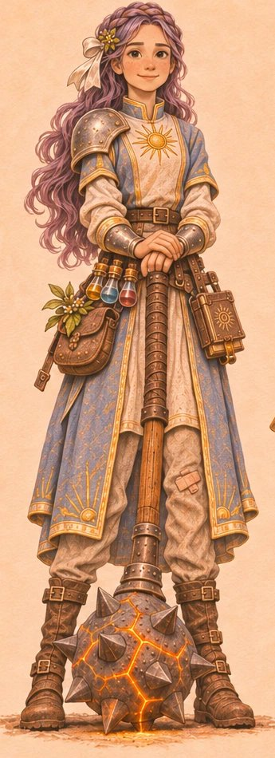
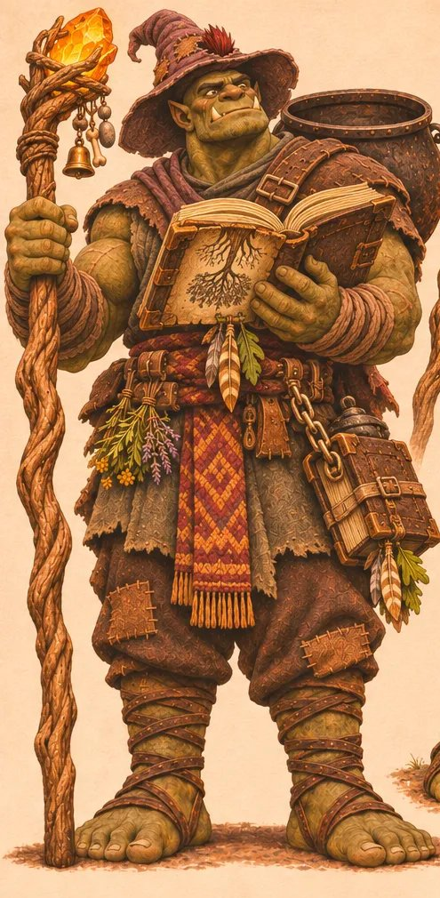

Действующие лица

Пятеро путников в мире, где карта ещё не дорисована. Ни один из них не знает, кем станет. Зато все точно знают, у кого бутерброды.

Дамбалдур Трампампур
дворф-воин, умеет коватьРыжая борода — его гордость, нос — его гордость поменьше. Ворчит на всё на свете: на плохую ковку, на сложную магию и на тех, кто не любит бутерброды. Но если ты стал его другом — он за тебя пробьёт любую стену. А иногда и потолок. Головой.
Хлопнет, топнет — и случится маленькое чудо. Боится только одного: что бутерброд закончится.

Лириан
тихий маг, капитан командыУмный, спокойный, немногословный. Улыбается, когда шутят другие, а сам шутит так тихо, что не все замечают. Его магия странная: он делает вещи тяжёлыми или лёгкими и плетёт цепи из чернильной тьмы. Мечтает, чтобы гномы, эльфы и все-все наконец подружились.
Пальцы всегда в чернилах. В кармане — бутерброд, который Дамбалдур заставил его съесть.

Элира
эльфийка-лучница, следопытВыглядит юной, а говорит иногда как древняя бабушка: «в мои-то годы…». Всегда знает, куда идти, где спрятаться и откуда стрелять. Однажды она забыла всех своих старых друзей — и теперь бережёт новых больше всего на свете.
В косичке — бусина за каждого друга. В кармане — кусочек бутерброда, утащенный у Дамбалдура.

Теона
храмовница света, самая младшаяДобрая, вежливая, лучшая ученица своего храма. Лечит светом и варит снадобья из трав. А ещё у неё моргенштерн больше её самой, с огненным сердцем внутри. Она почти всегда промахивается — и поэтому научилась промахиваться нарочно, чтобы попасть.
После каждого удара извиняется. Даже перед чудищами.

Орк-маг
новый друг, маг и шаманОгромный, спокойный, бродит сам по себе и разговаривает с камнями. Колдует по-настоящему — только половину своих заклинаний сам не понимает. Хотел вызвать бурю — получил тучку, которая льёт суп прямо в котёл. Отличный повар и вечный соперник Дамбалдура в споре, чей бутерброд лучше.
Книгу заклинаний читает вверх ногами. Работает.
Вместе они — гильдия, которой ещё нет. Но скоро будет.